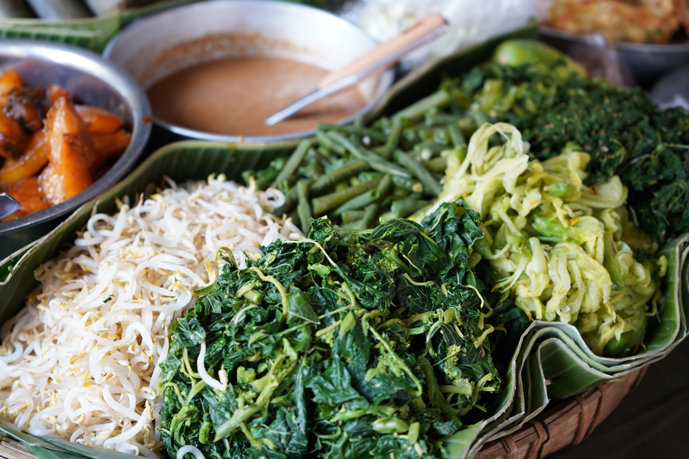
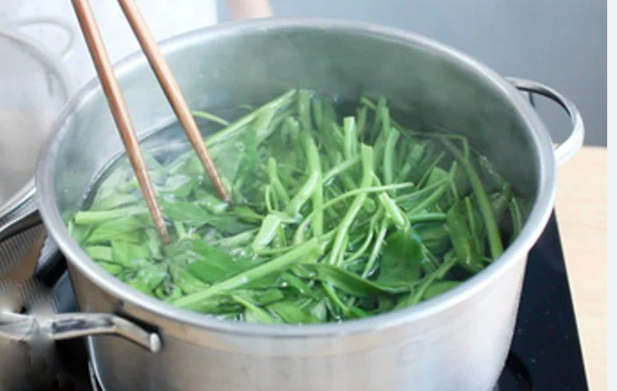
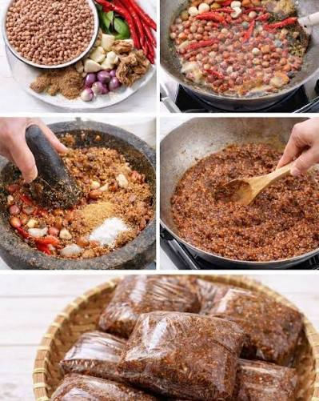
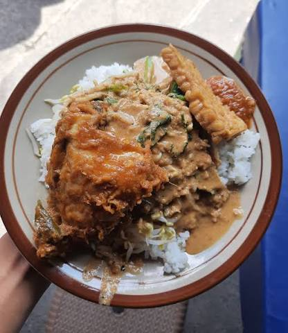
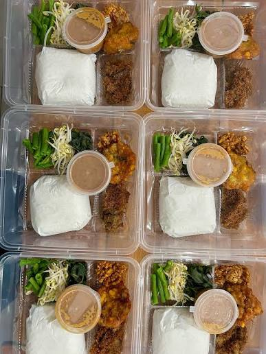

Proses Produksi
Halaman ini menguraikan tujuh tahap pembuatan nasi pecel, dari persiapan bahan sampai pengemasan. Uraiannya bersifat umum dan menggambarkan alur kerja yang lazim dalam menyiapkan hidangan pecel.
Urutan tahap penting karena setiap langkah memengaruhi kebersihan, rasa, dan penampilan hidangan. Sayuran yang belum bersih tidak boleh direbus, dan sambal harus siap sebelum hidangan disajikan.
Tujuh Tahap Pembuatan Nasi Pecel
-
Persiapan Bahan

Tahap 1: persiapan bahan. Tahap pertama adalah menyiapkan seluruh bahan: beras untuk nasi, sayuran, kacang tanah, cabai, gula merah, kencur, bawang putih, daun jeruk, garam, dan bahan lauk. Bahan diperiksa kesegarannya dan ditakar agar kebutuhan untuk hari itu jelas sejak awal.
-
Pembersihan Sayuran

Tahap 2: pembersihan sayuran. Sayuran dipilah, bagian yang rusak dibuang, lalu dicuci dengan air mengalir sampai tanah dan kotoran hilang. Pencucian yang cermat penting karena sayuran pecel dimakan setelah direbus dalam waktu singkat.
-
Perebusan Sayuran

Tahap 3: perebusan sayuran. Sayuran direbus dalam air mendidih dengan waktu yang disesuaikan dengan jenisnya. Sayuran berdaun lunak membutuhkan waktu lebih singkat daripada kacang panjang. Setelah matang, sayuran ditiriskan agar tidak berair ketika disiram sambal.
-
Pembuatan Sambal Pecel

Tahap 4: pembuatan sambal pecel. Kacang tanah disangrai atau digoreng, lalu dihaluskan bersama cabai, bawang putih, kencur, gula merah, daun jeruk, dan garam. Adonan kemudian diencerkan dengan sedikit air sampai kental dan dapat disiramkan. Rasanya dicicipi dan disesuaikan sebelum dipakai.
-
Pengolahan Lauk Pendamping

Tahap 5: pengolahan lauk pendamping. Lauk pendamping seperti telur, lele, ayam, dan rempela disiapkan sampai matang dan dipisahkan dari sayuran mentah agar kebersihan terjaga. Rincian bumbu dan cara memasak tiap lauk ditentukan oleh pengelola usaha dan tidak diuraikan di sini.
-
Penyajian

Tahap 6: penyajian. Nasi diletakkan di piring, sayuran rebus ditata di atasnya, lalu sambal pecel disiramkan. Lauk pilihan pelanggan ditambahkan di sisi piring. Hidangan disajikan selagi nasi masih hangat agar aroma sambal terasa.
-
Pengemasan

Tahap 7: pengemasan. Pengemasan dilakukan bila pelanggan memesan untuk dibawa pulang. Secara umum, nasi, sayuran, sambal, dan lauk dipisahkan agar tidak basah dan tetap enak ketika dibuka. Usaha ini menyediakan layanan bungkus untuk dibawa pulang, sedangkan layanan antar tersedia untuk wilayah Kota Blitar.
Kebersihan di Setiap Tahap
Kebersihan perlu dijaga sejak tahap pertama sampai terakhir. Pekerja mencuci tangan sebelum menyentuh bahan, memakai peralatan yang bersih, dan memisahkan talenan untuk bahan mentah dan makanan yang sudah matang. Pemisahan ini mencegah kuman dari sayuran atau lauk mentah berpindah ke makanan yang siap disantap.
Pelanggan juga dapat membantu menilai kebersihan dengan melihat cara hidangan ditata dan dikemas. Penjelasan pada halaman ini sengaja dibuat terbuka supaya pembaca memahami bahwa nasi pecel yang enak berasal dari proses yang tertib, bukan hanya dari sambal yang pas.